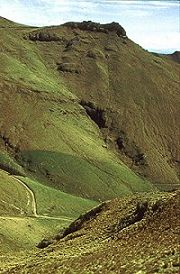
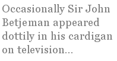

The Messenger
to James K. Baxter
The New Zealand poet James K. Baxter (1926-1972) chose to work
as a
postman rather than accept the academic jobs that were easily within his reach.
Wellington gales are famous.
Wellington wires scream in high wind and moan —
the telegraph poles strain steep up hectic hills
and bluster-blown postmen, wet and chilled to bone
drag mail bags using mountaineering skills,
as goat-like they withstand a slippery track
and fend off ankle-snapping dogs to boot,
inspired by legends of a poet, back
in days when poets pounded beats by foot.
Jimmy Baxter, driven poet, earned
his living as a postman, while he dreamed
and wrote his poetry all unconcerned
with how he was perceived or how esteemed.
Eccentric man, he carried letters more
than any postman ever did before.
Leaving New Zealand for Europe on a One-Way Ticket
The ship sailed slowly out the heads
to sea and all I knew was lost
to me. In ignorance I tossed
security away in shreds.
Dark water swirled around the hull
as isolation clamped my heart.
Familiar ties were ripped apart
and I was ignorant and small.
Adventure seemed a tawdry prize;
deep love was traded in exchange
for lucky-dips and random strange
diversions in this enterprise.
Embarked on something cold and vast
I wept to see my die was cast.
A Different Green
(Longing for the Port Hills in Canterbury New Zealand
while drowning in the bright green of England)
Green, too uniform for south-sea eyes,
the trees and grass identical, as though
this greenness was intent to emphasise
my alien need for green chiaroscuro.

I dreamed dark macrocarpa on the gold
of sun-bleached tussock, combed by winds that came
from nor-west, with hot, dusty breath to scold
the polished heights no gales will ever tame.
Broad, massive without angles; heavy grace
of monumental wind-eroded curves,
where once an ancient forest had its place.
Now grasses claim that forest’s old preserves.
Sure English green was lovely, but not mine;
I longed for contrast in my green design
[ Published in The Pierian Springs Review ]
Out There
One moment light, then dark — no power.
The suburb stopped in sullen shock,
without a warning, for a block
all motors died for half an hour.
Twittering heedless through the trees,
two small marauding ringtail possums
cheerfully sought for shoots and blossoms
unaware of our unease.
Little marsupials, monkey-tailed,
hooked on branches and extended
hands for flowers which were intended
for such as these, then up they sailed
as though no gravity existed;
over canopies they skittered,
barely touching as they littered
poo and petals till they misted
into darkness where they vanished,
leaving me to wait for light
and when it came, too harsh, too bright,
I longed for what my world had banished.
Finding the poet
Some of us were born expatriates. I certainly was. My provincial New Zealand family was an impoverished branch of a family that had seen better days. My parents feared that their children would pick up “common speech and manners” from “rough children”. This fear was encouraged by my father’s elder sister, who remembered better days. Her speech was decidedly Edwardian. She was known in educational circles in Britain as well as New Zealand, for her children’s verse speaking choirs. Before I could walk she had me reciting:
“A birdy with a yellow bill
hopped upon my window sill.
Cocked its saucy head and said:
“Ain’t you ashamed you sleepy head.”
This story was vouched for by numerous relatives. I was a “strange” child. Adults would get me to talk to them just so they could hear the pompous utterances that fell from my infant lips. I felt a bit like GBS’s Eliza Doolittle when she said: Here! what are you sniggering at? If I was doing it proper, what are you laughing at?
My aunt, Flora Alexa Stevens, was a poet as well as a teacher. During the Second World War she was published in a British poetry anthology which included Robert Frost, Rabindranath Tagore, Vida Sackville West, W. H. Davies, Roy Campbell, A. E. Housman, Alex Comfort, Eileen Duggan and many other notables. My parents knew nothing of this, of course. She received no appreciation in her own philistine family.
Here is one of her poems from that anthology:
CasualtyHe is gone. We did not see him go,
When from our isle he darkly, silently,
Slid on smooth waters by the sheltering land;
His grey form still, his heart vociferous,
His sky-blue eyes keen, he watched awhile, no doubt,
The hills of Wellington become a blur
Of twinkling lights; the little sandy bays
Where his brief boyhood shrieked the summer through
Show as small curves of light, elude his gaze,
And disappear in stars and midnight blue.
He is gone... there were some waiting weeks...
And then a blessed word... we breathed again
And hoped. The sun was warm all day, birds sang,
Our own sky-thrilling lad alive as they.
We ceased our moods of silence, and our hands
Knew their accustomed labour. We were glad
To live, because he lived. He was on land
After the treacherous waters... Oh, soft rain
Fall lightly on him! Sun-soaked summer sand
Blown idly by, rest for a moment. Air
That was his world, be still as you pass there,
Where he lies now who will not fly again.
The only poetry I knew as a child was in the English books given to me by my aunt. When I was thirteen I stood up in class at the request of my teacher to read Walter Scott’s poem “Young Lochinvar”. I started it with verve and passion.
O, YOUNG LochinVAR is come OUT of the WEST... The entire class shrieked with laughter. I sat down and refused to read aloud for the rest of my schooldays. I knew I was right and they were wrong.
I was in my late teens before I discovered New Zealand poets. I felt vaguely cheated. People had been writing about my own world while I was being directed to look across the sea. At that stage of my life I was absorbed by acting, music and painting. I played Beatrice in a school production of “Much Ado About Nothing”. Shakespeare stayed with me. Poetry was peripheral but intriguing. I met the poet James Keir Baxter, a passionate, loquacious yet introspective idealist.
Here is the opening stanza from Baxter’s “Rocket Show”:
As warm north rain breaks over suburb houses,
Streaming on window glass, its drifting hazes
Covering harbour ranges with a dense hood:
I recall how eighteen months ago I stood
Ankle-deep in sand on an Otago beach
Watching the fireworks flare over strident surf and bach,
In brain grey ash, in heart the sea-change flowing
Of one love dying and another growing....
(“bach” is a New Zealand term for a small beach house.)
I recognised something of myself in him. I knew he would have shocked my aunt. A school friend of mine married the New Zealand Polynesian poet Alistair Te Ariki Campbell. After separating from his first wife, the poet Fleur Adcock, he married my friend. His poems do not break easily into fragments.
Here is a broken piece of one of Alistair Te Ariki Campbell’s poems:
Blue Rain
Blue rain from a clear sky.
Our world a cube of sunlight—
but to the south
the violet admonition
of thunder
Innocent as flowers
your eyes with their thick lashes
open in green surprise.
What have we to fear?...
I left New Zealand with my husband, to live in London. Work and survival as a classical singer consumed all of my energy. I became aware of contemporary English poetry mainly through the electronic media. Roger Woddis, the irreverent English satirist, delighted me.
Here is a stanza from his “Down With Fanatics!”:
Fanatics are an evil breed
Whom decent men should shun;
I’d like to flog them till they bleed,
Yes, every mother's son,
I'd like to tie them to a board
And let them taste the cat,
While giving praise, oh thank the Lord,
That I am not like that...
The nature of my work as a classical singer meant that I was still excluded from the immediate life of the country in which I lived. I vaguely admired the words of some of the Beatles’ songs although as a musician I wondered at the popularity of their music. Shortly after my arrival in London I read of the suicide of Sylvia Plath. Her poetry was barely mentioned. She was a feminist martyr as far as the Sunday papers were concerned. I met someone who had been part of her close circle during her days in Devon. I never heard her poetry mentioned. Occasionally Sir John Betjeman appeared dottily in his cardigan on television as he challenged modernity with his unrepentant but amusing conservatism.
I enjoyed the unkempt television appearances of the American poet Allen Ginsberg, who used to sit cross-legged on the floor, sounding his Indian finger cymbals while reciting his poems.
I was living my poetry through performance. It was built into my daily life. Meter and mood were my constant companions.
I read a great deal of poetry but nearly always in relationship to songs.
I was discovering too many things at once to pause for any one of them.
Still, I ached with homesickness. The English countryside was all that its poets claimed for it but I was unable to feel that essential primitive connection vital for a poet or any other creative artist.
And then ill-health and opportunity combined to end my singing career but start a new life together with my husband, to live in Australia. Another foreign country.
The truth is that Australians are everything that my frightened parents feared. Every sound Australians uttered challenged the genteel expectations of my youth and of the English opera and concert world I had known up to that point. I quickly realised that the old class measurements of speech had no relevance in Australia. It was a magnificent liberation but it left me devalued. The one thing that Eliza Doolittle and I had mastered was valueless in this new world. In my first morning in Australia I watched television with fascination as a nicely dressed woman explained how to make “cikes, pois and pystries.” And everyone pronounced the letter H as “Haitch”. I knew that none of these things mattered but how was I to find my equilibrium in such a place? And it was also experienced in reverse. When I spoke to people in shops they stared at me, then either asked me to repeat myself, laughed, or made some scathing comment. And I couldn’t understand anything that was said to me.
My husband’s work as a publishing executive for a conservative international company made a barrier between us and the easy bohemian types with whom we were accustomed to mix. At my first dinner party in Australia I learned that young boys had their birthdays put into a lottery and if that date was drawn they were sent to fight in the Vietnam War. I expressed my horror to my hosts and quickly realised that I was not in congenial company.
One day in a bookshop I saw a volume of poems by a New Zealand poet, the late Denis Glover. And there in the shop I burst into tears. I experienced such an ache for the innocence of New Zealand and poets and the landscape that I bought the book and read it like a thirsty dog at a puddle.
Here are a couple of excerpts from a poem of his loved by New Zealanders of my generation, “The Magpies”. The Australian magpie has spread to New Zealand and its carolling song pervades much of the countryside.
When Tom and Elizabeth took the farm
The bracken made their bed,
And Quardle oodle ardle wardle doodle
The magpies said.
Tom’s hand was strong to the plough
Elizabeth’s lips were red.
And Quardle oodle ardle wardle doodle
The magpies said...
Elizabeth is dead now (it’s years ago);
Old Tom went light in the head;
And Quardle oodle ardle wardle doodle
The magpies said...
And an excerpt from “Threnody”, another poem by Denis Glover:
In Plimmerton, in Plimmerton,
The little penguins play,
And one dead albatross was found
At Karehana Bay...
I found my courage and started writing letters to Australian newspapers. They published them. They published so many that I still have a thick folder full of clippings.
Writing letters to a newspaper is not dissimilar to writing a poem. The same discipline is needed. You must resist including too many ideas and concentrate on the main message. You must be parsimonious with words.
Then one day I wrote a letter that evoked a phone call from an established Australian immigrant poet, Margaret Diesendorf. “You are a poet,” she told me. I was astonished. She sent me a copy of her own published collected work. Here is an excerpt from one of her poems:
Summer Tourist in ParisAmong the women of all lands,
the milling crowds, (the dark, the blonde,
the lean, the plump) I walk —
ghost who does not belong —
ghost who has lost her home
and errs through foreign streets
seeking another, in vain.
One location remains
untried:
le Dôme
des Invalides.
A puff of wind, a storm,
a freak commotion:
I’m blown
into an eerie catacomb.
“Velgome!”
a dead soldier shifts
in his ancient tomb
of porphyry.
A marshal? General? Admiral? —
Napoleon!..
Later I met the Australian Nobel laureate Patrick White. “I read all your letters”, he said. “They’re very good”. I was shocked.
When I collaborated on a book about Chernobyl I insisted that it should contain some poems contributed by women who had experienced the effects of the fallout.
I had always written poetry but didn’t think it was anything serious. It was my secret.
I worked for years in the bleak and terrible world of nuclear disarmament. That is dreadful for a poet. To live with death and nuclear winter every day of your life when you are just beginning to rediscover who you are is not something I can describe.
Then one day a small, abandoned half-fledged nestling walked up to the feet of my husband who was doing some carpentry in the garden. It bonded with both of us. It learned everything with us. It practiced whirring its wings around and around as it stood on my husband’s sawhorse. It sat on my shoulder. It launched itself into the air only to land on the ground with a thud. Its feathers had not fully formed. It learned to sing as it sat on my knee. The bird I recognised as its delinquent parent sang to it and it absorbed the lesson. Out of its puny body came ancient roulades and trills and scales. It was an Indian Mynah bird and it freed me from depression. One expatriate helped another.
That was exactly how I discovered poetry. I didn’t find any common language with the Australian poets although I loved many of their poems. I had to find my own voice by listening to all of the poets who reached me. I was unaware of national barriers. I love much Australian poetry because it says something that only someone who lives in Australia can say. I am in love with Australia. I say what I feel and it probably doesn’t reach many Australians or New Zealanders. I have spent too many years away from tribal speech. I must be my own poet.